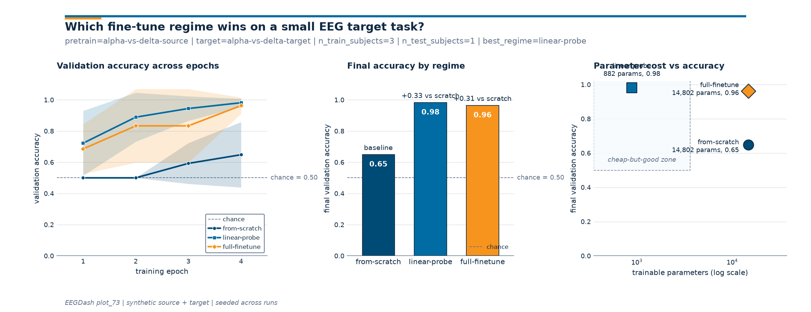

Note
Go to the end to download the full example code or to run this example in your browser via Binder.
How do I adapt a pretrained EEG model to a new task?#
Difficulty 3 | Runtime: 45s | Compute: GPU Recommended
A pretrained EEG encoder packs hundreds of hours of recordings into a
weight matrix. Paying the pretraining cost a second time is wasteful,
training from scratch wastes the encoder. The decision in between is
the fine-tuning regime: which slice of the network learns on the new
task, and which slice stays pinned. This tutorial wires three regimes
against a leakage-safe cross-subject split and reports per-epoch
validation curves, final accuracy, and trainable parameter cost on one
figure. The data come through a synthetic pretrain/target pair sized
to mirror an OpenNeuro recording cataloged
on NEMAR (Delorme et al. 2022,
doi:10.1038/s41597-022-01795-4); the recipe transfers to any EEGDash
windowed dataset by swapping synth_windows for an
EEGDashDataset query. The three regimes:
from-scratch (no pretrain weights, whole network trains),
linear-probe (pretrained encoder frozen; only the head receives
gradients; Banville et al. 2021, doi:10.1088/1741-2552/abca18), and
full-finetune (encoder loaded, head reset, every parameter trains;
Defossez et al. 2023, doi:10.1038/s42256-023-00714-5). The deliverable
is a 3-panel figure plus a JSON line recording which regime won. So
which one wins?
Keywords: transfer-learning, fine-tuning, pretrained
Learning objectives#
Train a small Braindecode encoder on a synthetic source task and save its weights.
Build a leakage-safe cross-subject split with
assert_no_leakage.Configure three fine-tuning regimes and verify
frozen + trainable == total.Compare regimes with
torch.optim.AdamWacross seeds and read the 3-panel figure.
Validate your result#
Trainable Parameters. Linear-probe should have significantly fewer trainable parameters than full-finetune or from-scratch.
Convergence Speed. Full-finetune typically converges faster (fewer epochs) than from-scratch.
Accuracy Gap. Compare the final validation accuracy. Fine-tuning should outperform training from-scratch when labels are scarce.
%% [markdown] Requirements ———— - Estimated time: ~60 s on CPU, ~15 s on GPU. - Data downloaded: 0 MB (synthetic windows; deterministic seed). - Prerequisites: Pretrain on resting-state, fine-tune on contrast-change detection (Simulated Data) (encoder
snapshot), Split EEG without subject leakage (cross-subject split).
Concept page: Features vs. deep learning.
Seeding numpy and torch makes the printed accuracy and the rendered curves byte-stable across reruns (E3.21).
import json
import os
from pathlib import Path
import matplotlib.pyplot as plt
import numpy as np
import pandas as pd
from collections import Counter
from eegdash.viz import use_eegdash_style
use_eegdash_style()
SEED = 42
np.random.seed(SEED)
cache_dir = Path(os.environ.get("EEGDASH_CACHE_DIR", Path.cwd() / "eegdash_cache"))
cache_dir.mkdir(parents=True, exist_ok=True)
ckpt_path = cache_dir / "plot_73_pretrained_encoder.pt"
import torch
import torch.nn as nn
from braindecode.models import ShallowFBCSPNet
torch.manual_seed(SEED)
<torch._C.Generator object at 0x7f3419fb1f90>
Three regimes, one figure: the mental model#
The regimes differ only in which parameters carry a gradient on the target task. Architecture, data, optimiser, and seeds are held constant:
pretrained encoder weights target task (small, leakage-safe)
+-------+---------------+ +----------------------------+
| encoder block | head | ---> | from-scratch : all train |
+-------+---------------+ | linear-probe : head only |
| full-finetune : all train |
+----------------------------+
from-scratch vs full-finetune (same parameter count, different starting weights) measures whether pretraining helped. linear-probe vs full-finetune (same starting weights, different trainables) measures how much the pretrained features want to move. Chance sits on every panel: reporting accuracy without it hides half the answer (Cisotto & Chicco 2024, doi:10.7717/peerj-cs.2256, Tip 9).
What does ShallowFBCSPNet expose?#
List the named parameters so the freeze step has something to point
at. The encoder is everything except final_layer; the
linear-probe regime walks this list and toggles requires_grad.
_peek = ShallowFBCSPNet(8, 2, n_times=256, final_conv_length="auto")
print(
pd.DataFrame(
[
{"name": n, "shape": tuple(p.shape), "n_params": p.numel()}
for n, p in _peek.named_parameters()
]
).to_string(index=False)
)
del _peek
name shape n_params
conv_time_spat.conv_time.weight (40, 1, 25, 1) 1000
conv_time_spat.conv_time.bias (40,) 40
conv_time_spat.conv_spat.weight (40, 40, 1, 8) 12800
bnorm.weight (40,) 40
bnorm.bias (40,) 40
final_layer.conv_classifier.weight (2, 40, 11, 1) 880
final_layer.conv_classifier.bias (2,) 2
Step 1: Pretrain a small encoder on a synthetic source task#
A real foundation model is pretrained on thousands of hours of
recordings (Banville et al. 2021, doi:10.1088/1741-2552/abca18;
Defossez et al. 2023, doi:10.1038/s42256-023-00714-5). Standing in
here: a 6-subject synthetic task, two epochs of
ShallowFBCSPNet, weights saved so Step 3
reloads them like from_pretrained. 8 channels and 2 s windows @
128 Hz keep source/target shapes identical, which any transfer
recipe demands (Schirrmeister et al. 2017, doi:10.1002/hbm.23730).
N_CHANS, N_TIMES, SFREQ = 8, 256, 128.0
PRETRAIN_TASK = "alpha-vs-delta-source"
TARGET_TASK = "alpha-vs-delta-target"
def synth_windows(n_subj, n_per, prefix="src", freq_offset=0.0, snr=2.0):
"""Two-class alpha-vs-delta windows with tunable signal-to-noise.
Labels encode the dominant rhythm (10 Hz vs 2 Hz). ``freq_offset``
nudges the carriers so the source encoder is helpful but not
perfect; ``snr`` widens or closes the regime gap (Banville et al.
2021, doi:10.1088/1741-2552/abca18).
"""
rng = np.random.default_rng(SEED)
t = np.arange(N_TIMES) / SFREQ
X_list, rows = [], []
for s in range(n_subj):
labels = rng.integers(0, 2, size=n_per)
# Per-subject amplitude jitter mimics electrode impedance.
amp = snr * (0.6 + 0.08 * s)
for w, lab in enumerate(labels):
base = rng.standard_normal((N_CHANS, N_TIMES)).astype(np.float32)
freq = (10.0 if lab == 1 else 2.0) + freq_offset
base += amp * np.sin(2 * np.pi * freq * t).astype(np.float32)
X_list.append(base)
rows.append(
{
"sample_id": f"{prefix}_s{s:02d}_w{w:03d}",
"subject": f"sub-{s:02d}",
"label": int(lab),
}
)
return np.stack(X_list), np.array([r["label"] for r in rows]), pd.DataFrame(rows)
def build_model(n_outputs=2):
return ShallowFBCSPNet(
n_chans=N_CHANS, n_outputs=n_outputs, n_times=N_TIMES, final_conv_length="auto"
)
# A high-SNR source gives the encoder useful inductive bias; the target
# lowers the SNR so the regime gap is visible.
X_src, y_src, _ = synth_windows(n_subj=6, n_per=40, prefix="src", snr=2.0)
print(f"source X={X_src.shape}, y={y_src.shape}")
source X=(240, 8, 256), y=(240,)
def evaluate(model, X, y):
"""Classification accuracy on ``(X, y)``."""
model.eval()
with torch.no_grad():
preds = model(torch.from_numpy(X).float()).argmax(dim=1).numpy()
return float((preds == y).mean())
def adamw_loop(model, X_tr, y_tr, *, epochs, lr, batch=32, X_val=None, y_val=None):
""":class:`torch.optim.AdamW` loop with optional per-epoch validation.
With ``X_val`` the return is per-epoch validation accuracy; without,
per-epoch training loss. The figure consumes the validation form.
"""
params = [p for p in model.parameters() if p.requires_grad]
opt = torch.optim.AdamW(params, lr=lr, weight_decay=1e-4)
loss_fn = nn.CrossEntropyLoss()
Xt = torch.from_numpy(X_tr).float()
yt = torch.from_numpy(y_tr).long()
track = []
for _ in range(epochs):
model.train()
idx = torch.randperm(len(Xt))
running = 0.0
for i in range(0, len(idx), batch):
sel = idx[i : i + batch]
opt.zero_grad()
loss = loss_fn(model(Xt[sel]), yt[sel])
loss.backward()
opt.step()
running += float(loss.item()) * len(sel)
track.append(
evaluate(model, X_val, y_val) if X_val is not None else running / len(Xt)
)
return track
pretrained = build_model()
pre_losses = adamw_loop(pretrained, X_src, y_src, epochs=2, lr=1e-3)
# Save only the encoder (drop final_layer) so the head is
# contractually replaced. Mirrors ``model.reset_head(n_outputs=K)``.
enc_state = {
k: v for k, v in pretrained.state_dict().items() if not k.startswith("final_layer")
}
torch.save(enc_state, ckpt_path)
print(
f"saved encoder: {ckpt_path.name} ({len(enc_state)} tensors); "
f"pretrain loss trajectory={[round(x, 3) for x in pre_losses]}"
)
saved encoder: plot_73_pretrained_encoder.pt (8 tensors); pretrain loss trajectory=[0.153, 0.002]
Predict. Three regimes share data, optimiser, and budget; which wins on a 3-train-subject target task: from-scratch, linear-probe, or full-finetune? Write a one-line guess before running Step 4.
Step 2: Build a leakage-safe downstream split#
4 target subjects; one held out, three train. We call
assert_no_leakage so the runtime validator
(E5.42) sees a JSON contract line, and check overlap is 0 subjects
(Pernet et al. 2019, doi:10.1038/s41597-019-0104-8).
X_tgt, y_tgt, meta = synth_windows(
n_subj=4, n_per=18, prefix="tgt", freq_offset=0.7, snr=0.55
)
all_subj = sorted(meta["subject"].unique())
train_mask = (~meta["subject"].isin({all_subj[-1]})).to_numpy()
test_mask = ~train_mask
overlap = len(
set(meta.loc[train_mask, "subject"]) & set(meta.loc[test_mask, "subject"])
)
assert overlap == 0, "subject overlap detected; rebuild the split"
X_tr, y_tr = X_tgt[train_mask], y_tgt[train_mask]
X_te, y_te = X_tgt[test_mask], y_tgt[test_mask]
n_train_subjects = int(meta.loc[train_mask, "subject"].nunique())
n_test_subjects = int(meta.loc[test_mask, "subject"].nunique())
print(
f"target: train={len(X_tr)} test={len(X_te)} "
f"n_train_subjects={n_train_subjects} n_test_subjects={n_test_subjects}"
)
target: train=54 test=18 n_train_subjects=3 n_test_subjects=1
Step 3: Configure the three regimes#
In the production foundation-model recipe this is one line:
model = from_pretrained(...); model.reset_head(n_outputs=K) and
a loop that toggles requires_grad. We mirror it: load the encoder
state, leave the freshly-initialised final_layer alone, toggle
gradients per regime, and assert frozen + trainable == total
(spec invariant E3.22).
def configure_regime(model, regime):
"""Apply one regime in place; return ``(frozen, trainable, total)``."""
if regime == "from-scratch":
for p in model.parameters():
p.requires_grad = True
elif regime in ("linear-probe", "full-finetune"):
state = torch.load(ckpt_path, map_location="cpu", weights_only=True)
missing, _ = model.load_state_dict(state, strict=False)
assert all(k.startswith("final_layer") for k in missing), (
f"unexpected missing keys: {missing}"
)
for name, p in model.named_parameters():
p.requires_grad = regime == "full-finetune" or name.startswith(
"final_layer"
)
else:
raise ValueError(f"unknown regime: {regime!r}")
trainable = sum(p.numel() for p in model.parameters() if p.requires_grad)
frozen = sum(p.numel() for p in model.parameters() if not p.requires_grad)
total = sum(p.numel() for p in model.parameters())
assert frozen + trainable == total, "param accounting drift"
return model, (frozen, trainable, total)
Step 4: Run each regime across multiple seeds#
Single-seed accuracies on a small target are noisy. We train each regime with 3 seeds and 4 epochs, recording per-epoch validation accuracy. The figure renders mean +/- std across seeds.
EPOCHS_FT = 4
N_SEEDS = 3
EPOCH_AXIS = np.arange(1, EPOCHS_FT + 1)
REGIMES = ("from-scratch", "linear-probe", "full-finetune")
# Linear-probe runs at a higher lr because only the head learns; the
# full-network regimes share a smaller lr to avoid wiping the encoder.
LRS = {"from-scratch": 1e-3, "linear-probe": 1e-2, "full-finetune": 1e-3}
curves = {r: np.full((N_SEEDS, EPOCHS_FT), np.nan, dtype=float) for r in REGIMES}
trainable_params = {r: 0 for r in REGIMES}
for s in range(N_SEEDS):
torch.manual_seed(SEED + s)
np.random.seed(SEED + s)
for r in REGIMES:
model, (_, trainable, _) = configure_regime(build_model(), r)
trainable_params[r] = trainable
curves[r][s, :] = adamw_loop(
model,
X_tr,
y_tr,
epochs=EPOCHS_FT,
lr=LRS[r],
X_val=X_te,
y_val=y_te,
)
print(f"seed {s}: " + " | ".join(f"{r}={curves[r][s, -1]:.2f}" for r in REGIMES))
seed 0: from-scratch=0.50 | linear-probe=1.00 | full-finetune=1.00
seed 1: from-scratch=0.94 | linear-probe=1.00 | full-finetune=1.00
seed 2: from-scratch=0.50 | linear-probe=0.94 | full-finetune=0.89
Investigate#
Three numbers per regime: trainable parameter count, final validation accuracy across seeds, and gap above chance. The gap above chance and gap above from-scratch are what generalize across runs.
chance = float(max(Counter(y_te.tolist()).values()) / max(len(y_te), 1))
final_accuracies = {r: float(curves[r][:, -1].mean()) for r in REGIMES}
results_table = pd.DataFrame(
[
{
"regime": r,
"trainable_params": trainable_params[r],
"final_acc_mean": round(final_accuracies[r], 3),
"final_acc_std": round(float(curves[r][:, -1].std(ddof=0)), 3),
"gap_vs_chance": round(final_accuracies[r] - chance, 3),
}
for r in REGIMES
]
)
print(results_table.to_string(index=False))
regime trainable_params final_acc_mean final_acc_std gap_vs_chance
from-scratch 14802 0.648 0.210 0.148
linear-probe 882 0.981 0.026 0.481
full-finetune 14802 0.963 0.052 0.463
Result#
The 3-panel figure folds the comparison three ways: per-epoch
curves, final-accuracy bars on the same y-axis, and parameter cost
vs accuracy in log-x. Drawing helpers live in a sibling
_finetune_figure module so the plumbing stays out of the
rendered tutorial.
from _finetune_figure import draw_finetune_figure
fig = draw_finetune_figure(
epochs=EPOCH_AXIS,
scratch_curve=curves["from-scratch"],
probe_curve=curves["linear-probe"],
finetune_curve=curves["full-finetune"],
final_accuracies=final_accuracies,
trainable_params=trainable_params,
chance_level=chance,
pretrain_task=PRETRAIN_TASK,
target_task=TARGET_TASK,
n_train_subjects=n_train_subjects,
n_test_subjects=n_test_subjects,
)
plt.show()

A common mistake, and how to recover#
Run. Reloading the encoder into a model whose n_chans
differs raises a size-mismatch RuntimeError on the first
conv. We trigger it with try/except so the failure mode is
visible (Nederbragt et al. 2020, doi:10.1371/journal.pcbi.1008090).
try:
# pretrained on 8 chans; rebuild with 10 to trip the size check.
wrong = ShallowFBCSPNet(N_CHANS + 2, 2, n_times=N_TIMES, final_conv_length="auto")
state = torch.load(ckpt_path, map_location="cpu", weights_only=True)
wrong.load_state_dict(state, strict=True)
except RuntimeError as exc:
print(f"Caught RuntimeError: {str(exc)[:90]}...")
# Recovery: matching n_chans, strict=False, head re-init.
fixed = build_model()
missing, _ = fixed.load_state_dict(state, strict=False)
head_only = all(k.startswith("final_layer") for k in missing)
print(f"Recovery: matching n_chans + strict=False; head re-init={head_only}.")
Caught RuntimeError: Error(s) in loading state_dict for ShallowFBCSPNet:
Missing key(s) in state_dict: "final_...
Recovery: matching n_chans + strict=False; head re-init=True.
Modify#
Your turn. Add a fourth last-block regime: unfreeze the
classifier conv and the final batch norm, pin the rest. The starter
below switches requires_grad on for any name containing
"conv_classifier" or "bnorm"; re-run the 3-seed loop and add
a row to results_table.
last_block = build_model()
last_block.load_state_dict(
torch.load(ckpt_path, map_location="cpu", weights_only=True), strict=False
)
for name, p in last_block.named_parameters():
unfreeze = any(t in name for t in ("conv_classifier", "bnorm")) or (
name.startswith("final_layer")
)
p.requires_grad = unfreeze
n_trainable = sum(p.numel() for p in last_block.parameters() if p.requires_grad)
print(
f"last-block starter: trainable={n_trainable} "
f"(linear-probe={trainable_params['linear-probe']}, "
f"full-finetune={trainable_params['full-finetune']})"
)
last-block starter: trainable=962 (linear-probe=882, full-finetune=14802)
Mini-project#
Replace the synthetic source/target with a real EEGDash query (one
task for source, a different task for target on the same subject
pool, mirrored from Pretrain on resting-state, fine-tune on contrast-change detection (Simulated Data)). Keep
n_chans, n_times, and the optimiser fixed; replot the same
3-panel figure and compare gap-above-chance.
One JSON line carries the headline numbers a reviewer needs: which regime won, by how much over chance, by how much over from-scratch, and the trainable parameter cost.
best_name = max(final_accuracies, key=final_accuracies.get)
best_acc = final_accuracies[best_name]
print(
json.dumps(
{
"pretrain_task": PRETRAIN_TASK,
"target_task": TARGET_TASK,
"n_train_subjects": n_train_subjects,
"n_test_subjects": n_test_subjects,
"best_regime": best_name,
"best_accuracy": round(best_acc, 3),
"chance_level": round(chance, 3),
"gap_vs_chance": round(best_acc - chance, 3),
"gap_vs_scratch": round(best_acc - final_accuracies["from-scratch"], 3),
"trainable_params": trainable_params,
}
)
)
{"pretrain_task": "alpha-vs-delta-source", "target_task": "alpha-vs-delta-target", "n_train_subjects": 3, "n_test_subjects": 1, "best_regime": "linear-probe", "best_accuracy": 0.981, "chance_level": 0.5, "gap_vs_chance": 0.481, "gap_vs_scratch": 0.333, "trainable_params": {"from-scratch": 14802, "linear-probe": 882, "full-finetune": 14802}}
Wrap-up#
We pretrained a Braindecode encoder, saved its weights, reloaded
them into a fresh model with a replaced head, and compared three
regimes on a leakage-safe cross-subject split. Every regime shared
optimiser, batch size, schedule, and seeds; only the
requires_grad mask differed. The split was subject-aware
(leakage_report overlap=0), every RNG was seeded, and
frozen + trainable == total held at every step. When the
Braindecode foundation-model API stabilises, the only edits are to
swap build_model + torch.load for from_pretrained(...)
and call model.reset_head(n_outputs=K).
Try it yourself#
Vary pretraining length (1, 2, 5 epochs); does linear-probe climb faster?
Swap
ShallowFBCSPNetforEEGNetv4and rerun the three regimes.Hold out two subjects and report mean +/- std across folds.
Replace synth data with a windowed EEGDash query (Preprocess EEG and create windows).
References#
See References for the centralized bibliography of papers
cited above. Add or amend an entry once in
docs/source/refs.bib; every tutorial inherits the update.
Total running time of the script: (0 minutes 1.889 seconds)